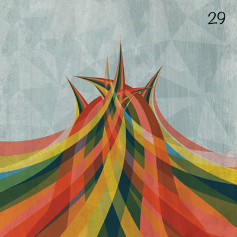

Interactive record. Each ring of grooves is a song. Press Enter to focus it and Escape to leave. Use the arrow keys to move between songs, and Enter to play one.
No.029
Twentyninth
Finally! I’m making a habit out of this aren’t I? But the truth is, I’ve heard so much awful music of late that I haven’t been compelled to put out a mix. That, and trips back home and everything in between. I’m going to try and make this a fortnightly affair but my other pet project completes three years on the 19th, so there’s plenty on my plate and simply not enough clones.
Also on YouTube
Tracklist
Running order
21 songs
Take it home
The inlay card
Print it, cut it out, and fold it into a cassette case. You can also copy the tracklist and rebuild the mix wherever you listen.
Side A
- Shooting Up Sunshine Reptile Youth
- Hospital (Win Your Love) Jesca Hoop
- The Only Place Best Coast
- That Girl The Noisettes
- Bones Michael Kiwanuka
- Scattered Like Leaves Azure Ray
- You Kill Eternal Summers
- Gonna Make My Own Money Deap Vally
- Constant Conversations Passion Pit
- Dennis, Hook Me Up With Some More Of This Whiskey! Kid Cudi
- Laura Bat For Lashes
Side B
- Fineshrine Purity Ring
- Anything Could Happen Ellie Goulding
- Hold On When You Get Love and Let Go When You Give It Stars
- Sleep Alone Two Door Cinema Club
- Now You Do d’Eon
- Lord Knows Dum Dum Girls
- I Know What Love Isn’t Jens Lekman
- Halo (Beyoncé cover) LP
- High Summer jj
- Peter Pan Jinja Safari
Twentyninth
Notes
From the original post
This one has a lot of standout tracks, so happy listening my fellow indie enthusiast.
Album art featuring work by Andrew Bannecker
Archive